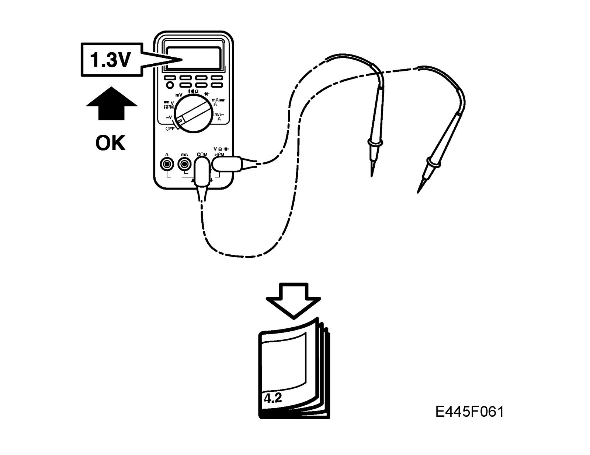
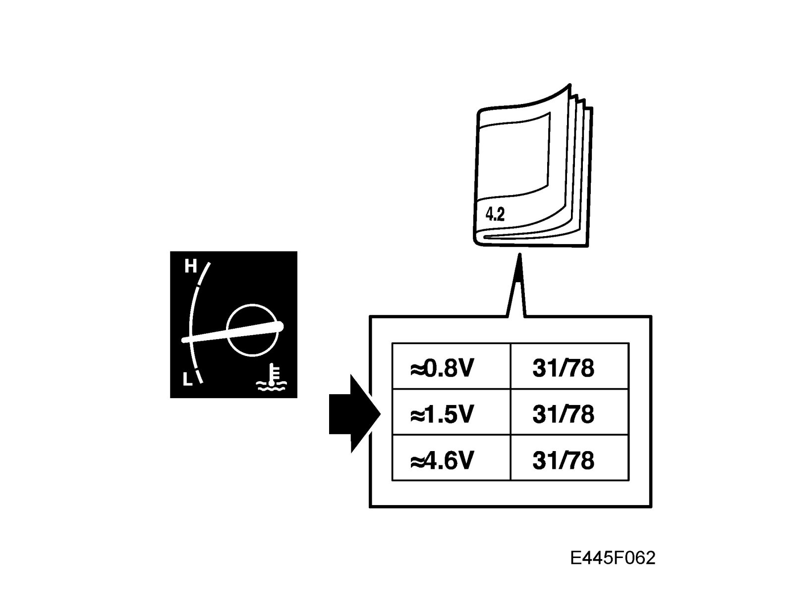
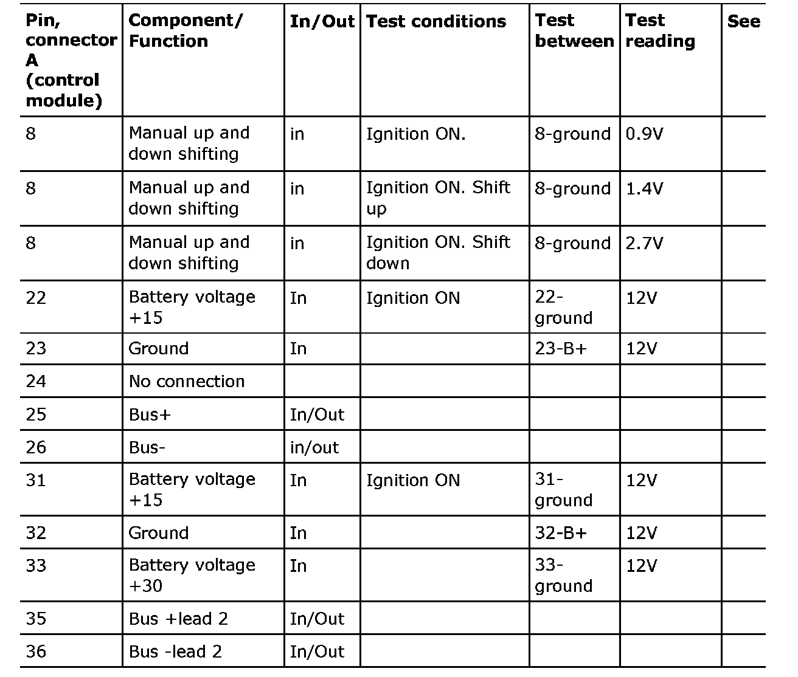
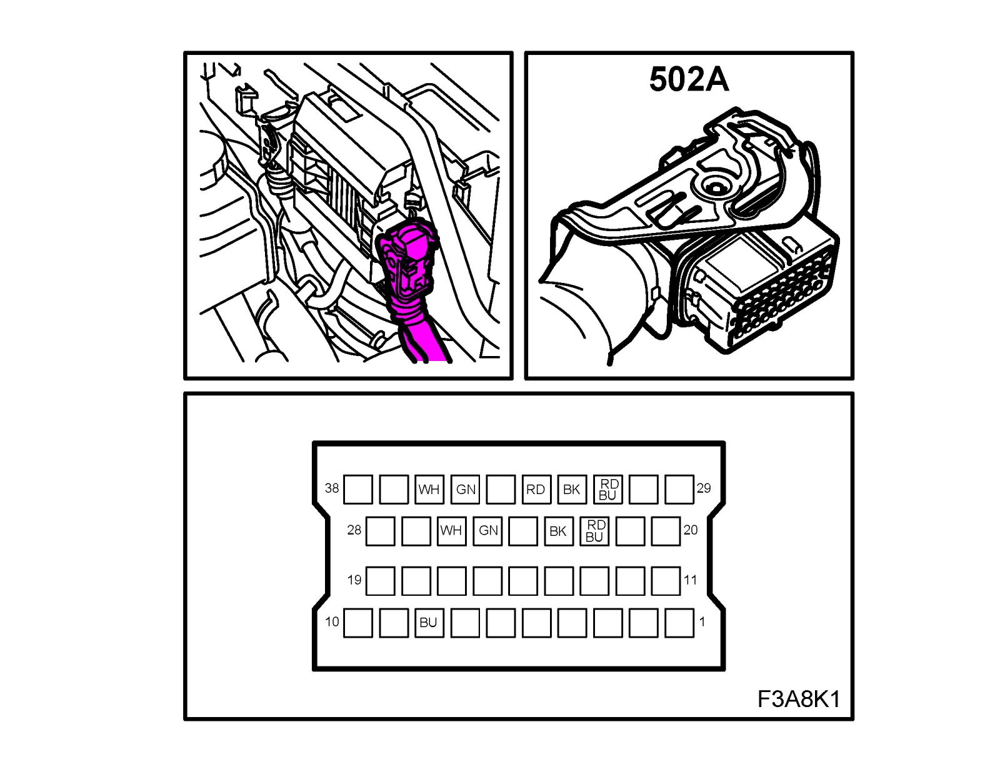
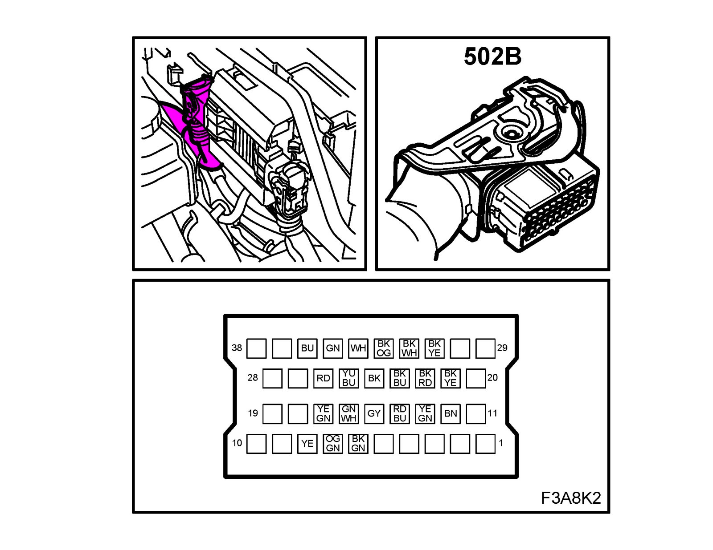
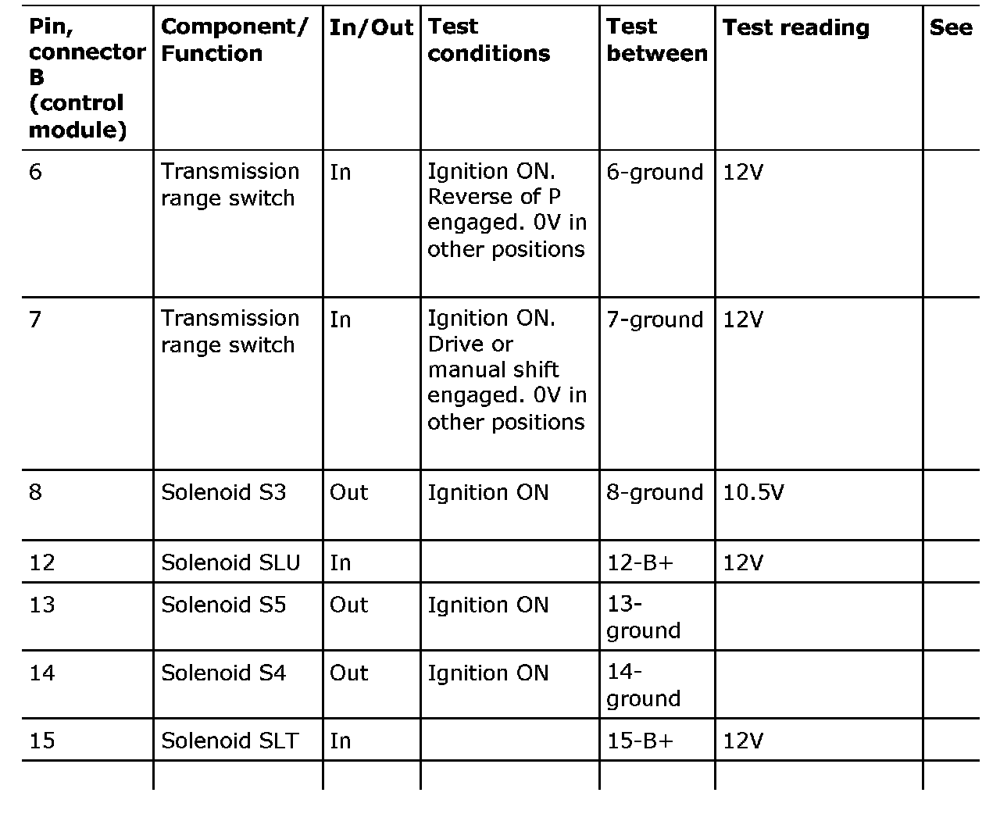
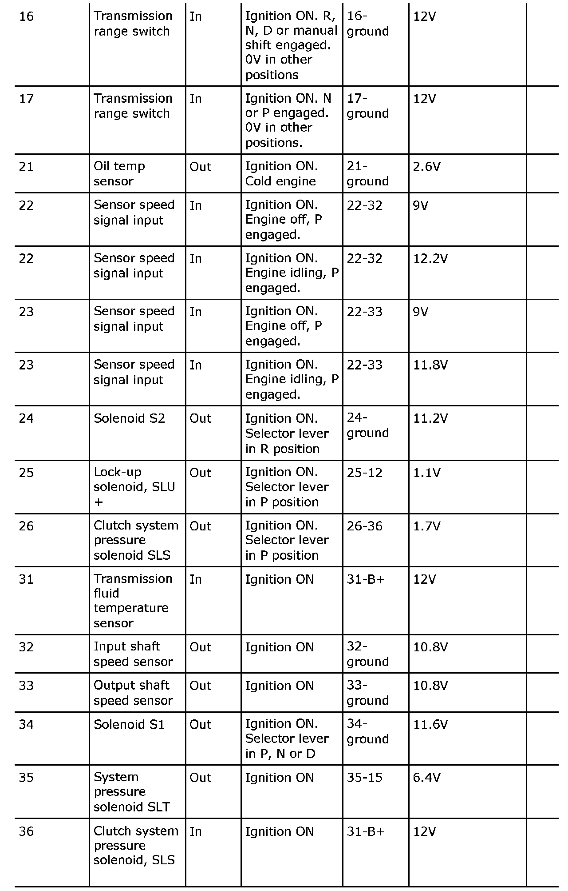

Control Module: Testing and Inspection
Test readings, TCM connections

Scope
The following are values and directions for measuring signals and levels on automatic transmission control modules. Pin number not specified in the table are not used.
Points to remember
- Observe the test conditions, use your common sense when assessing the readings obtained.
- The specified values are with the ignition in position ON unless stated otherwise.
- First check that the control module is supplied with current and grounded.
- Then check all sensor inputs and signals from other systems.
- Finally, check the control module inputs. Remember that the test readings do not indicate whether or not the actuator is in working order.
- If any reading is not OK, consult the wiring diagram to determine the leads, connectors or components which ought to be checked more thoroughly.
- The specified test readings refer to those obtained with a calibrated Fluke 88/97.
- Test readings %(+) and ms(+) indicate the signal pulse ratio and pulse duration. A test instrument capable of measuring pulse ratio and pulse width must be used. The sign denotes a positive trigger pulse, TRIG+.
Note
All units connected to the I and P-buses transmit signals.
Table connector A


*A vehicle speed reading can be obtained with the diagnostics instrument, command menu "Read functions" and "Output speed".
Table connector B


